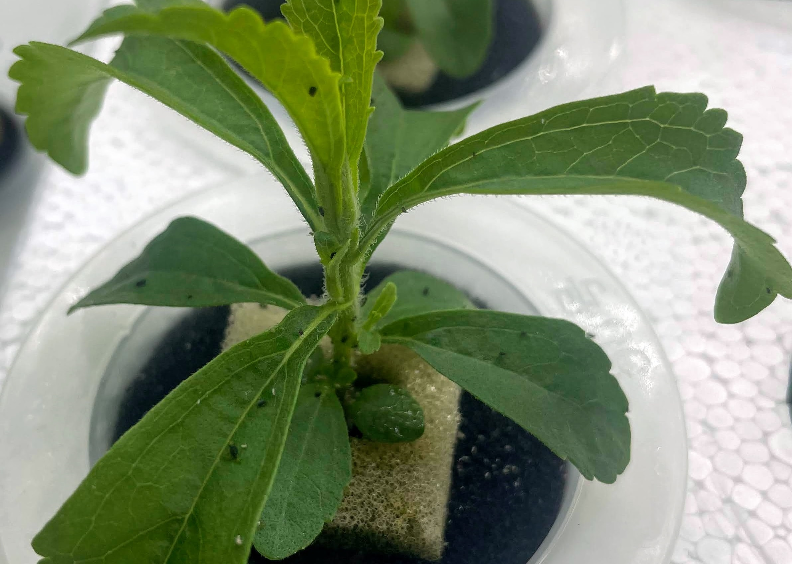
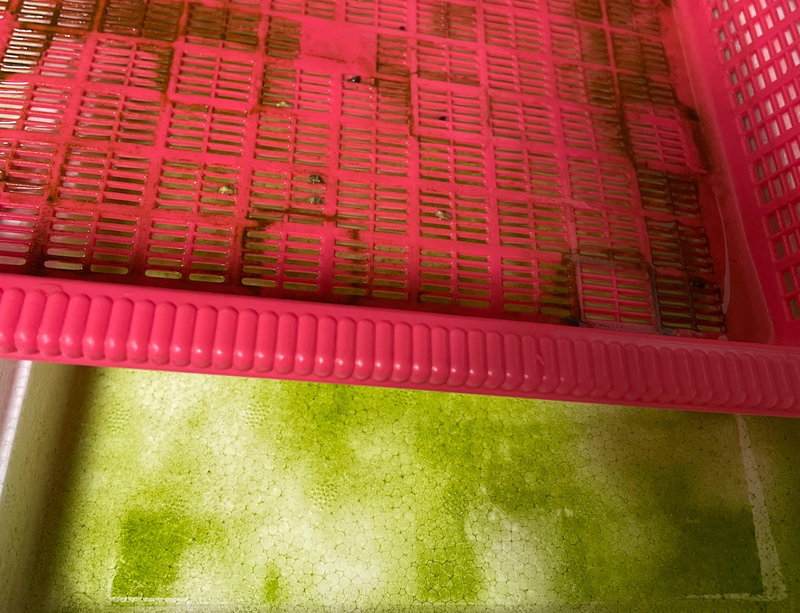
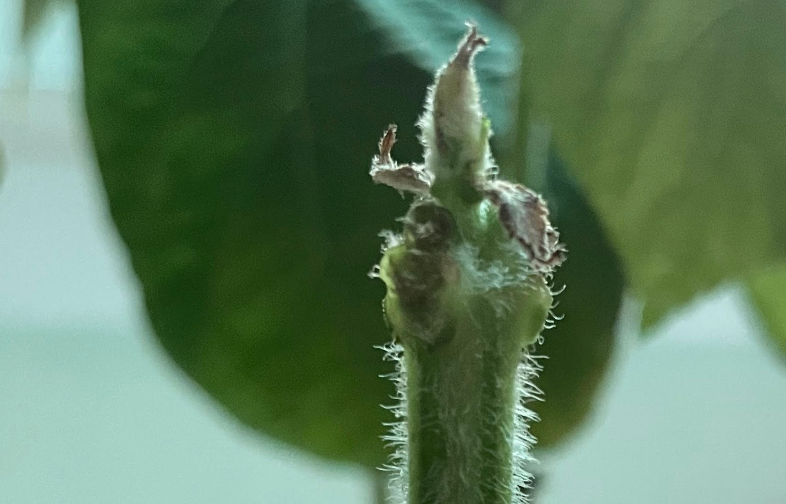
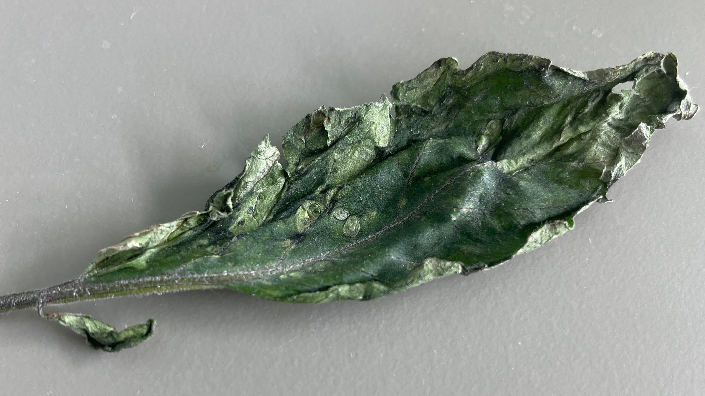

Problems
Plundered from
- Hydroponics with Microalgae and Cyanobacteria: Emerging Trends and Opportunities in Modern Agriculture
- Effects of microalgae Chlorella vulgaris on hydroponically grown lettuce
- The influence of microalgae on vegetable production and nutrient removal in greenhouse hydroponics
Pest isn't to be happened with seeding, but attacks from other farms are possiblew. Be cautious to letting in plants from other indoor farms.

In my case it's a plant lice. All plants from that farm been sacrificed, and emamectin was sprayed. Observable lices were removed with a tweezer.
Algae is a prevalent and unfavorable thing in hydroponics. But articles (1, 2) suggest possible plants benefits from algae, including increased DO, microstimulants (hormones), and better growth parameters.

This may vary for species, but not negleactable. So I'm leaving (going to leave) algae unless they become a sticky mass. Algae don't grow up when there's no light, or water is deep enough. So this won't be seen at the time from the seedling been transplanted.
Physiological or intrinstic problem is prevalent in hydroponics.

